Untuk perempuannnkuuuu terindahhhh yang sedang bertambahhh usia hariii iniii,
Selamattt ulanggg tahunnn, sayangggggggg.
Hari ini kamu bertambah umur tepatnya di 27 tahun. Untuk Sayannggku tercintaa Yuni Kumala Putri ini Website khusus aku bikin untukmu dengan sepenuh hati
untuk ulang tahun kamu yang spesial ini, dan aku minta maafff untukk keterlambatan ucapan ulang tahunn kamuu harii inii, yang berujung berantem dan buat kamuu kecewaa,
karena akuu mengecewakan kamu yg sudahh excited dengan ulang tahun kamuu pagi inii yg akuu ucapin pertama untukk kamuu tapi malahh akuu ngga ada ucapin ke kamuu karna akuu fokus ke nugas akuu yang masii berantakann dann mepett deadline,
Disini akuu memintaa maaff sebesar besarnyaa yaa yangg untukk ulang tahunn kamuuu jadii seperti inii garaa" akuu yang kurangg niatt inii dan kurang pekaa samaa kamuu,
Aku tahu, usia hanyalah angka, tapi di balik angka itu ada begitu banyak cerita baruu, pelajaran baruu, dan kekuatan yang kamuu simpan rapat" di dalam hatii kamuu.
Dan aku bangga, sangat bangga, bisa jadi bagian dari tahun ini, tahun di mana aku lihat kamu bertambah usia, tertawaa bahagiaa, kadang juga menangiss, tapi kamuu tetap tegarr menjalanii semuanyaa.
Kita sudah berjalan bersama lebih dari satu tahun. Tapi di saat yang sama, seolah akuu udah mengenal kamuu jauhhhh lebih lama dari waktu yang bisa kita hitungg.
Dari awal perkenalan kita yang penuh pertanyaan dari kita masing", sampai sekarang di mana kitaa mulai mengertii satu sama lain tanpa banyak kata.
Meski kadangg kita berantem hal sepele hal kecill maupun hal besarr ituu hanya ujiann kita seberapaa kuat kitaa menjalani dan melewati itu semuaa yangg.
Semua momen itu masih tersimpan rapihh di kepala akuu, mulai dari tawa kamuu, cara kamu ngomel manja, saat kamu sedang lelah, dan suara kamu manja negluh capekk ke aku yang selalu membuat segalanya terasa lebih ringan.
Hubungan kitaa bukan selalu tentang hal" maniss. Ada kalanya kita bertengkarr, saling salah faham, merasa jengkel atau emosii, bahkan saling diamm, bahlan yg lebih parahnya kita itu mengeluarkan kata" yg tidak seharusnya di keluarkan.
Maka darii ituu mariii belajarr bersamaa samaa untukk memperbaikii perkataan kitaaa yaa sayanggkuuuu.
Di ulangg tahunn kamuu yang ke 27 ini, Aku cuman pengen kamuuu cepattt kesiniii ke surabayaa aku udaaa nggaa sabarr pengenn pelukk kamuu foto barengg sama kamuuu, jalann jalann barengg sama kamuuu, akuu pengen grow up bareng kamuu, belajarr bisniss untuk masa depan kitaa.
Tujuan aku bersama kamuu itu nemani langkahh demi langkah perjalanan kita untuk di titik puncak, mensupport impiann kamuu, dan yg paling penting mencintaii kamuu bukan hanya ketika kamuu sedang bersinarr, tapi juga di saat kamuu merasa berantakan.
Yang dari kamu kerja udahh mapan bertahunn tahun dengan gajii lumayan cukup untuk kamuu, tapii semenjakk sama akuu entahh kenapaa musibahh datangg tibaa" posisi kamu digantikan dengan orang lain dan akhirnyaa kamu keluar darii kerjaan tersebutt disituu akuuu tetepp nemani kamuu disaat kamu belumm ada kerjaann lagii
Saat dapet kerjaan pun belum cocok, dan nyarii terus dan teruss. Akuu selaluu support kamu dimanaa akhirnya kamuu dapat kerjaan yg cocokk tapii sedihnyaa kamuu balik menjadi posisi bawah yaitu kasir yg sebelumnya head di cabang kerja kamuu,
Tapi semuaa ituu butuh prosess nggaa apaa yaa, disinii akuu doainn kamuu cepatt naikk jabatann dann semogaa kamuu di beri kerjaann yg lebihh bagusss dari padaa sebelumnyaa
Semoga tahun ini membawa lebih banyak hal baik untukmu yaa sayanggkuuuu cintaakuuuuu tetappp semangatttttt.... jangann pernah merasaa sendirii yaaaa.... ingatt akuu selaluu adaa dimanapunn kamuu butuhhhh.
Dan semoga apa pun yang kamu cari dalam hidup kedamaiann, kebahagiaann, cintaa yang nggaa pernahh pudarrr.
Terima kasih karena sudah memilihku untuk ada di sisimu. Terima kasih karena akuu selalu menjadii tempat pulang untukk kamuu .
i lovee youuu for day in, tomorrow, and so on babeee.
I say once again happyyy birthdayyyy my wifee
Dengan penuh cintaa,
Vinoo
Momen Perempuanku Selama Bareng Aku
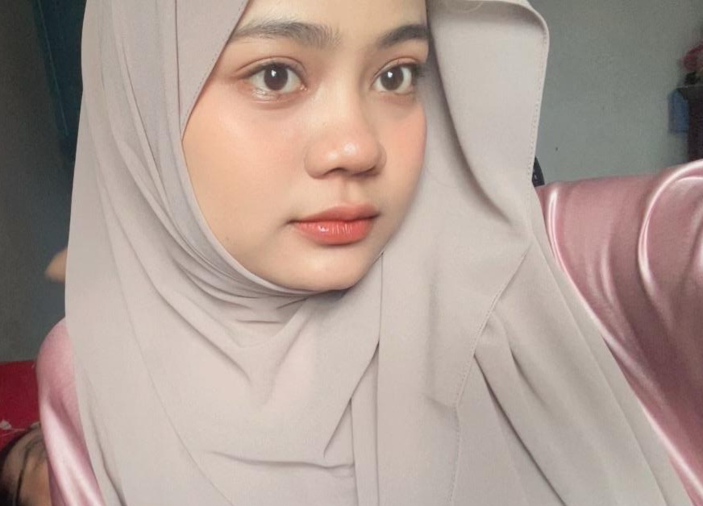
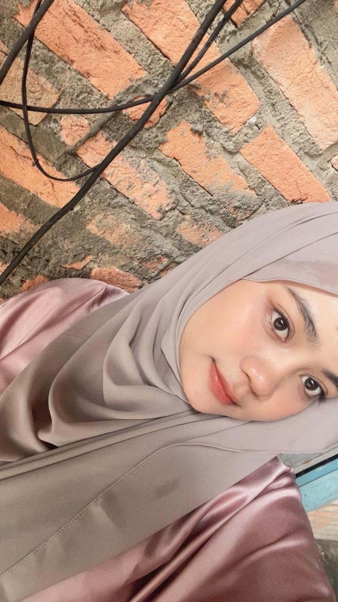
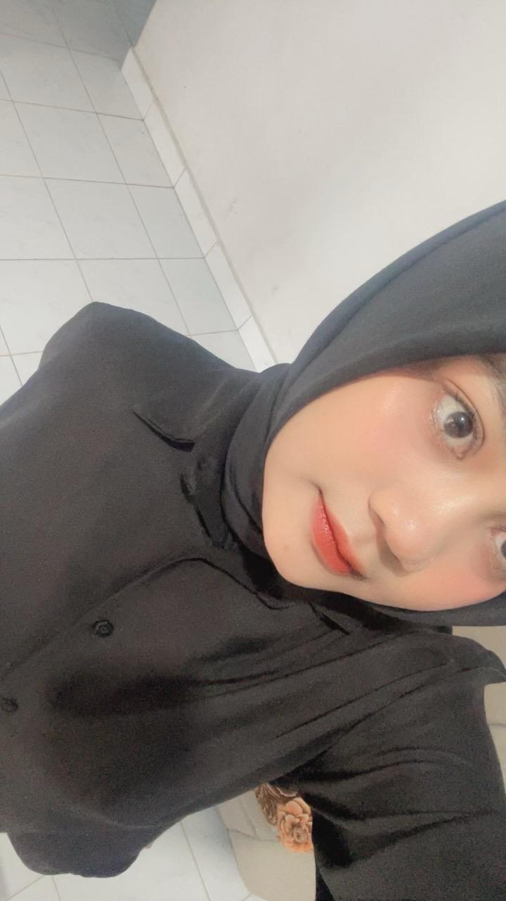
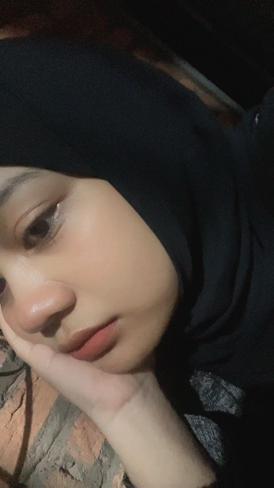
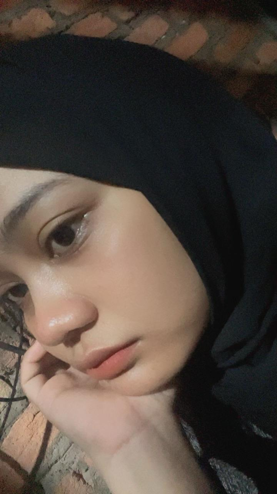
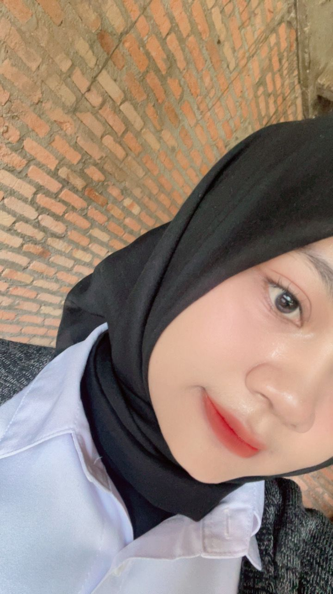
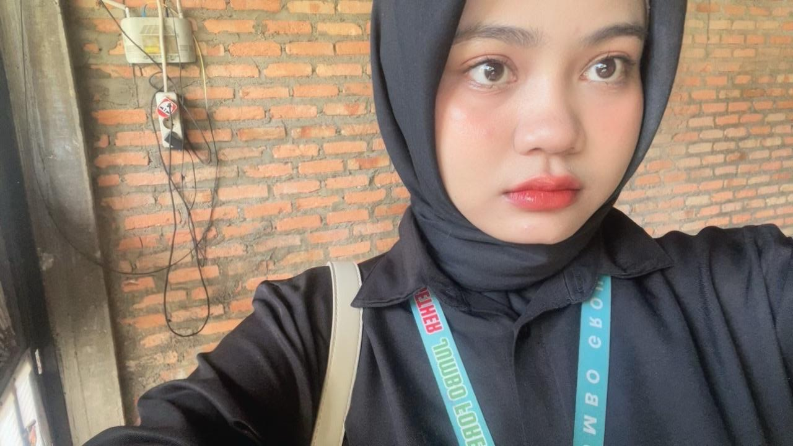
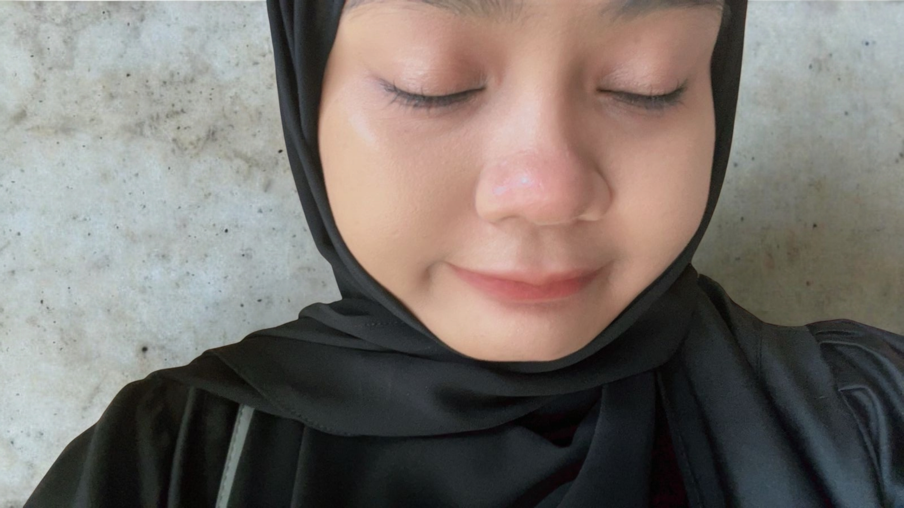
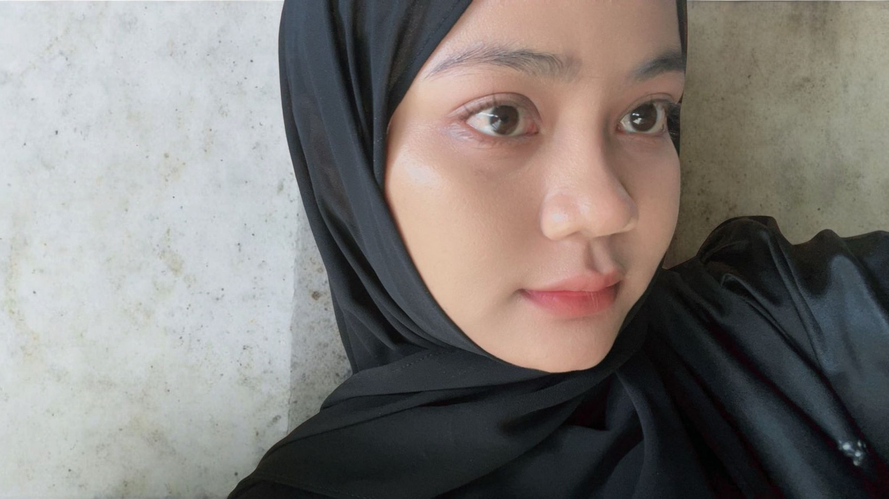
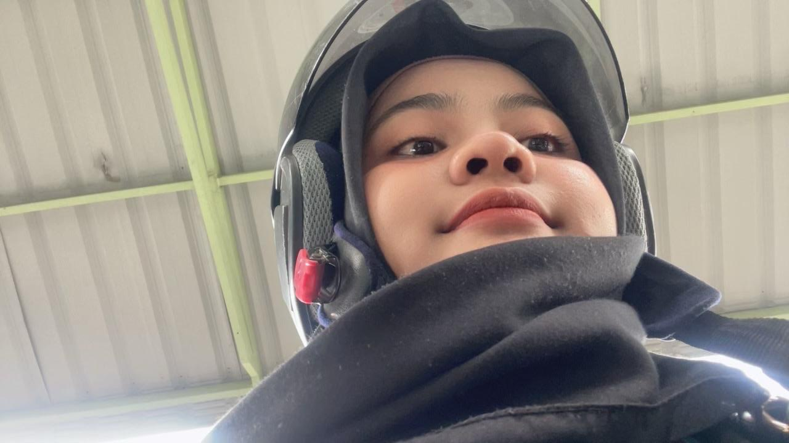
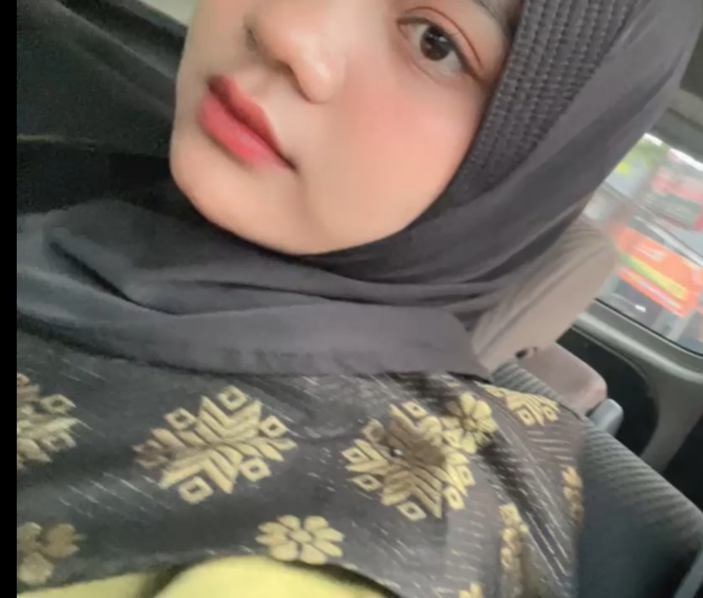
Momen Awal kita kenal masi salting mulu tanpa berantem

Ini foto kamu saat kita pertama kali kenal, aku langsung terpanah yangg lihat foto ini waktu kenalan awal 😩😫 .

Ini foto kamu pas main keluar sama teman kamu duhh cantikk kalii saltingg bangett waktuu ituu sekarangg aja saltingg liatt foto iniiii 😩😫

Ini foto kamu pas main keluar sama teman kamu lagii duhh gadaa obatt iniii cantikk kalii sumpahh saltingg bangett waktuu ituu juga sekarangg aja saltingg jadii ngga sabar gimana kalo ketemuuu 😩😫

ini fotoo kita pertama pakai AI tapii reall perfectt sepertii kita bertemuu langsung duhhh ini foto the best sihh estetikk gantengg dan cantikkkk 😩😫